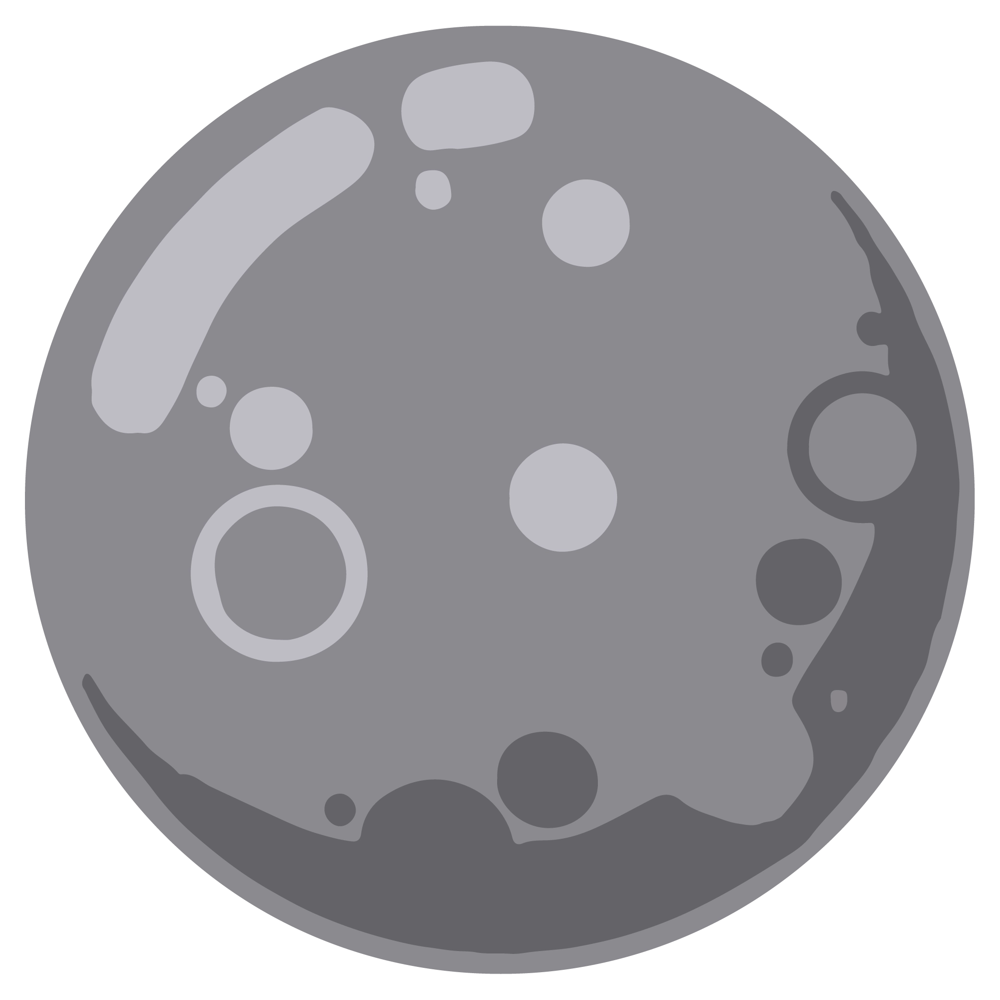
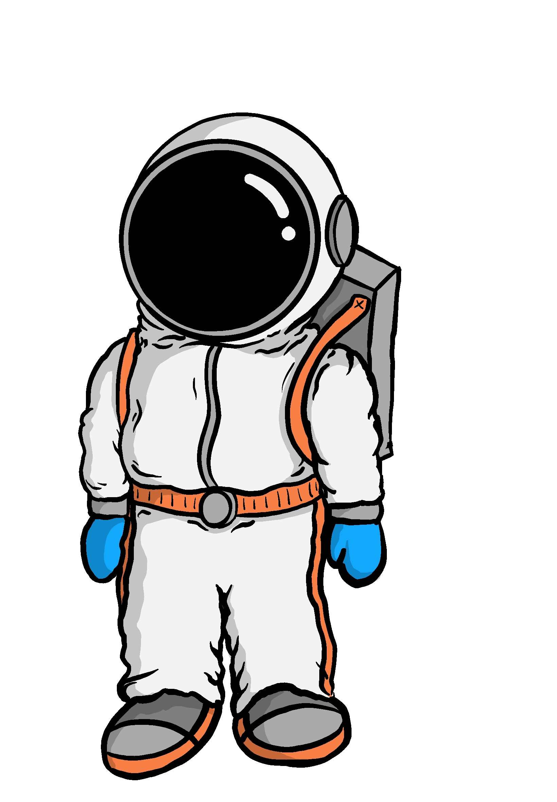
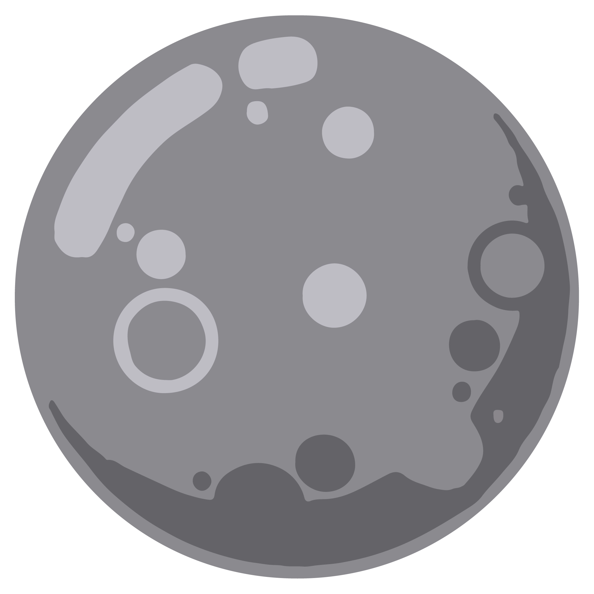
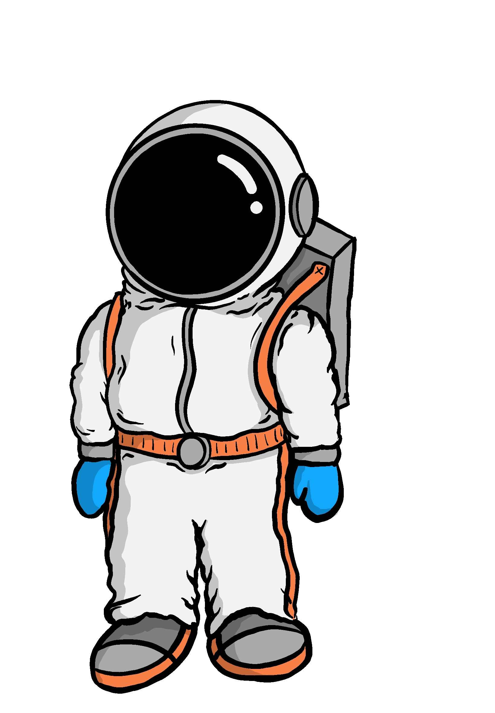

Hold da op!
Syntes du også tiden går meget hurtigt her?
Prøv at trykke på min arm for at se på mit ur.
Merkur
Merkur er den første planet fra solen i vores solsystem! Den ligger tættest på solen og er den mindste planet i solsystemet!